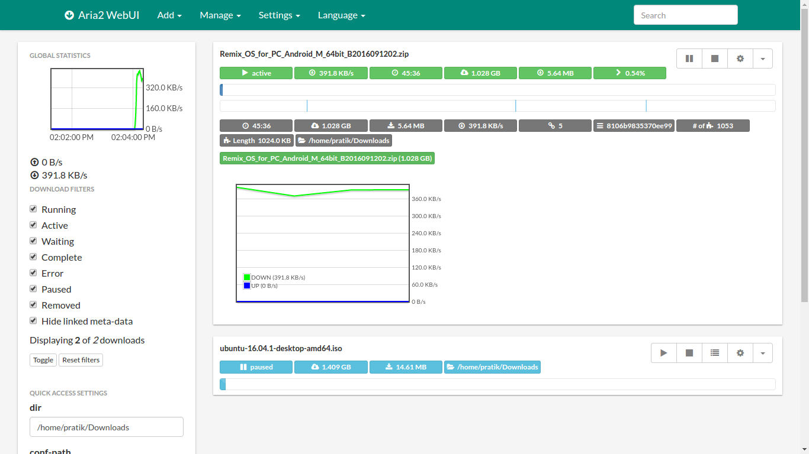

命令行下载工具的实力派——aria2 上手体验
从一个被浏览器大文件下载逼疯的用户视角，讲讲 aria2 这个命令行下载器上手一周以来的真实感受：快、稳、能挑文件，但也得接受它没有图形界面的冷启动门槛。
说实话，我之前从来没认真想过要装一个命令行下载工具。
浏览器自带下载够省心，IDM 又不是没花钱买过，迅雷虽然偶尔抽风但总归是个图形界面。直到上个月有个 80 多 G 的 PT 资源，浏览器下载到一半断了三次，IDM 不认种子链接，迅雷下到 40G 之后速度直接归零——我才发现手里居然没一个能在 HTTP、BT、磁力这几种下载方式之间通吃的家伙。
同事提了句 aria2，它的官网上写着这玩意儿同时支持 HTTP、BT 和磁力，我抱着试试看的心态去装了一下。这一周用下来，有些感受挺值得说的。
初印象：一个没有脸的下载器
安装包从aria2下载拿，解压到一个目录，把路径加到环境变量的 PATH 里，重开终端敲一句 aria2c --version，版本号蹦出来，完事。整个过程不超过五分钟，没有安装向导，没有捆绑软件，没有注册表污染——你在控制面板里找不到它，它也不打算被你找到。
说实话刚开始我有点懵。第一次用它下东西的时候，敲完命令回车，屏幕上一行一行滚的全是日志式输出，进度条是纯 ASCII 画的，连个百分比都得自己数。这跟我习惯了的那种带加速球、带悬浮窗的下载器完全不是一个物种。
但转念一想，人家从一开始就没打算给你做界面。aria2 是命令行工具，设计哲学就是让你能在终端里搞定一切——甚至包括远程控制。
真正让我留下来的三个地方
多文件种子里挑着下：这功能太实用了
之前用迅雷下一个影视剧集的种子，种子里带了 10 集正片、3 个花絮、2 个宣传片，还有各种字幕文件。我只想下其中 4 集正片，但迅雷默认全下，而且中途不能取消没下的文件。
aria2 怎么干这件事的？先敲 -S 参数看种子里所有文件的编号表：
aria2c -S "剧集.torrent"它会列出每个文件的 idx（编号）、路径和大小，然后你用 --select-file 按编号挑：
aria2c --select-file=1,3,5-7 "剧集.torrent"逗号分隔、区间写法、混着来都行，甚至还能把挑中的某个文件重定向到别的目录。更绝的是，Metalink 格式的资源（那些带签名校验的软件安装包集合）也用同一套编号逻辑，不用记两套语法。
这个功能看起来小，但真的戳中了日常下载的痛点——多少人下载完才发现下了一堆根本不想要的东西？
代理场景下不卡壳
我平时挂着代理下载，之前用别的工具经常遇到"直连能跑，走代理就卡住"或者反过来的情况。aria2 在这点上让我很意外。
它支持好几种代理配置方式：--all-proxy 一条命令管所有协议，或者按 HTTP/HTTPS/FTP 分别指定；带用户名密码的代理也能直接写在参数里，或者拆成 --all-proxy-user 和 --all-proxy-passwd 分开填。还有个 --no-proxy 能精准排除不走代理的地址，内网下载不受影响。
更方便的是环境变量。临时想换代理，直接一行：
http_proxy=代理地址:端口 aria2c "下载直链"用完关掉终端就回到默认状态，不用改配置文件。命令行参数优先级最高，环境变量次之，配置文件兜底——这个层次也很清晰，不会出现"不知道哪来的旧配置偷偷生效"的情况。
说实话之前我对命令行工具的预期是"功能单一，能跑就行"，aria2 在这些边角细节上的处理反而让我觉得它是被认真打磨过的。
给它配个遥控器之后，整个体验就不一样了
命令行虽然利索，但老盯着终端窗口也不是个事儿。我后来去aria2文档翻了翻，aria2 有个 RPC 接口，可以让网页前端当遥控器用。
目前最流行的前端是 AriaNg，一个纯静态的单页应用。打开 RPC 功能之后，在 AriaNg 的设置里填三要素：RPC 主机地址、端口号（默认 6800）、密钥——连上就能用了。

连上之后发现，之前那些命令行参数在图形界面里都变成了勾选框和下拉菜单：选择性下载就是勾选文件列表里的复选框，限速就是拖个滑块，甚至还能看实时速度曲线、按文件类型筛选、拖拽排序任务。
另一个叫 webui-aria2 的前端是更老的开源项目，界面风格偏朴素，但功能也挺全。还有 Docker 镜像版本，自托管一份也很方便。

这里面有个坑值得提一句：直接把 AriaNg 的 HTML 文件拖到浏览器打开可能被同源策略拦住，用它的 All-in-One 单文件版或者桌面版就没这个问题。还有 RPC 端口千万别裸奔暴露公网，记得配密钥，需要远程访问的话最好前面加反代和 TLS。
写在后面
用了一周下来，aria2 给我的感觉是一个不怎么打扮但活儿特别好的工具。它没有华丽的界面，没有"加速引擎"的噱头广告，甚至连个设置向导都没有。但它的多线程下载确实能把带宽跑满，BT/HTTP/磁力的统一支持确实省了不少切换工具的麻烦，那些看起来细碎的参数（选择性下载、代理排除、RPC 密钥）恰恰覆盖了真实使用中最容易踩的坑。
当然，它也不是谁都适合。如果你对命令行有天然的抵触，或者就是习惯了有悬浮窗、有右键菜单的下载体验，那 aria2 可能会让你觉得门槛太高。但如果你偶尔需要处理一些"浏览器和图形下载器都搞不定"的下载场景，或者就想在终端里完整体验一遍下载到底是怎么回事，那值得花半小时装一下试试。
这套命令行下载工具的资料我平时用了会同步整理，放在GitHub、Gitee、GitCode 三个仓库都能拿到，方便不同网络环境的朋友查阅。